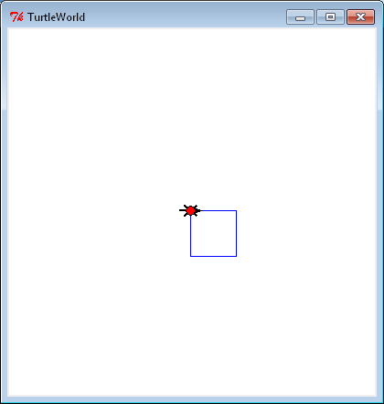
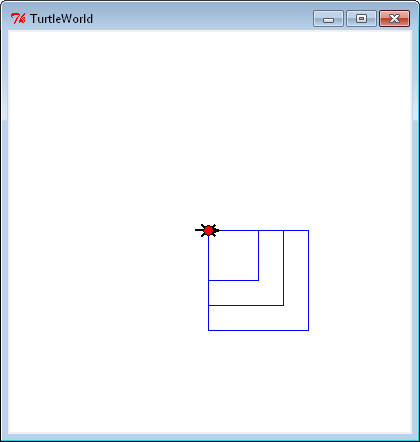
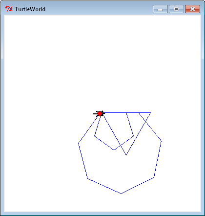
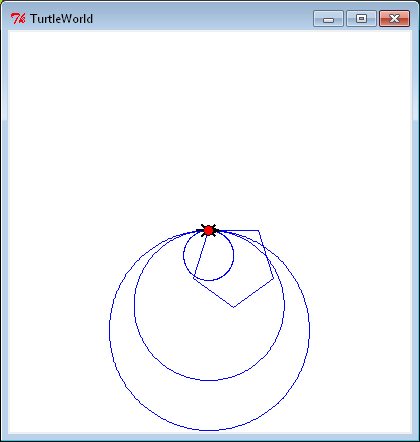
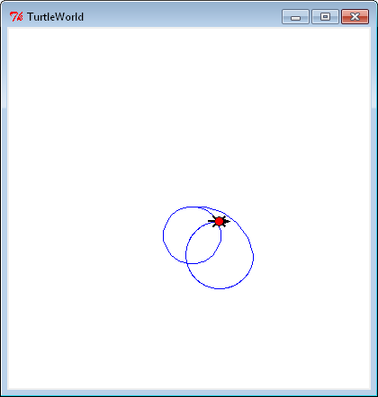

GO BACK
: package, modules, import, from, TurtleWorld, instance, encapsulation,
generalization, keyword arguments, interface design, refactoring, development plan, docstring,
debugging, preconditions, postconditions
Install Instructions
unzip swampy-2.1.7.zippython2 setup.py install
Definitions
- A is a collection of modules. An is a member
in a set.
- A is called a because the flow of execution runs
through the body and then loops back to the top.
- Wrapping a piece of code up in a function is called
- Adding a parameter to a function is called because it makes
the function more general.
- add parameter names in the function call, for
example:
polygon(bob, n=7, length=70)
- The of a function is a summary of how it is used: what are the
parameters? What does the function do? And what is the return value?
- Rearranging a program to improve function interfaces and facilitate code reuse is called
- A is a process for writing programs
- A is a string at the beginning of a function that explains the
interface:
def polygon(t, n, length):
"""Draws
an n sided polygon"""
- are requirements supposed to be true before a function starts
executing
- include the intended effect of a function and any side effects
Code
Exercises
- square.py - Draw a square of size 50

- squareLength.py - Draw squares with various lengths

- polygon.py - Draw n sided polygons

- circle.py - Draw a circle using n sided polygons

- arc.py - Draw an arc using a percentage of a circle
